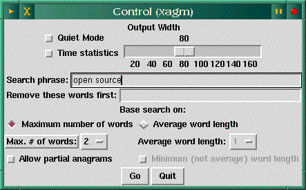
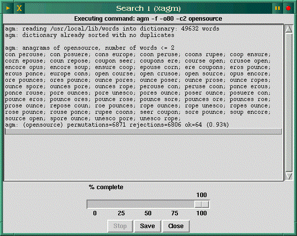

![[ TABLE OF CONTENTS ]](../gx/indexnew.gif)
![[ FRONT PAGE ]](../gx/homenew.gif)


Sometimes after a long stint of putting words together it can be amusing and relaxing to play with them for a while. Recently I discovered an anagram search program for Linux which has some interesting capabilities not found in other anagram programs I've seen. I'll also discuss an XEmacs mode called Conx which does much the same sort of transformation on sentences or blocks of text.
Fraser McCrossan is the author of agm and its Tcl/Tk interface xagm. Like WordNet's wn (reviewed elsewhere in this issue) agm is a command-line program, with xagm displaying its output in an X window. I appreciate programs with this sort of dual nature because they tend to be more portable. If Tcl/Tk isn't available the output could be formatted and displayed using another GUI toolkit, or simply used as a console program.
I found this release (1.3.1) of agm in Sunsite's incoming directory, but the archive was truncated. The included sample dictionary file was incomplete, but this file isn't needed to use the program (a corrected version was later uploaded which contains the complete dictionary file). Agm has the useful ability to make use of any text file as a source of words, and if you have ispell installed the dictionary file (in /usr/dict or /usr/lib/ispell) can be a good collection of words for agm. Just symlink it to /usr/local/lib/words. Several files can be concatenated on the command line and used simultaneously; the (incomplete) included dictionary file was created by combining several Project Gutenberg files, including a 1913 edition of Webster's Dictionary, a Shakespeare play, a couple of Mark Twain's works, the Jargon File, and three thesauri. This can be done temporarily, i.e. for a single search, or a new word file can be created; the default location is shown above, but this can be changed in the Makefile. The ability to select input files would be especially useful for non-English-speaking users.
Here are screenshots of two xagm windows:


A simple anagram search just takes a couple of seconds, but the time needed grows exponentially as the input words or phrases grow longer. Luckily there is an abort button in the Tcl version, and of course a command-line agm search can be aborted with control-c. Restricting the number of words in the output anagrams speeds the process up considerably, as there are so many combinations with multiple two-and-three-letter words. These anagrams tend to be less interesting, so a search with the switch -c2 is a good choice to start with.
The supplied man-page will tell you everything you need to know and more about agm, but the Tcl/Tk xagm interface is easy enough to use that the man-page shouldn't even be needed unless you want to compile a custom word-list. You might want to take a look at the xagm script and make sure the first line points to your preferred Tk wish interpreter.
The only source I know of for the program is the Sunsite incoming directory; the filename is agm-1.3.1.tar.gz. It will be moved eventually but shouldn't be too hard to find.
Buried in one of the directories of LISP files in any XEmacs installation is an odd and interesting word amusement called Conx. Based on an earlier implementation by Skef Wholey, Conx was rewritten in Emacs Lisp by Jamie Zawinski in 1991, and was last modified in 1994.
Conx is similar to the older Emacs mode Dissociated Press (accessed with the command alt-x dissociated-press). Dissociated Press acts on the current buffer, scrambling words and sentences to produce odd and sometimes humorous juxtapositions. Conx-mode takes this concept further, allowing a series of either selected regions or entire files to be loaded into a sort of word database, then releasing scrambled output into an ever-growing buffer; the process is terminated with Control-g.
There are just a few commands for controlling this mode:
Conx-mode reminds me of the novelist William Burroughs' "scissors and paste" method of combining text from various sources; he used this technique in some of his published works. Semi-random text generation can be useful as well as amusing. Sometimes it can help lift you out of verbal ruts and provide a new view of familiar text and usage.
In conclusion, here is an example of conx-mode applied to several paragraphs from two sources: Sir Thomas Browne's seventeenth-century work Religio Medici and Mark Twain's Huckleberry Finn.
Place where a hair ball would belch a community. Schism, lonesomeness. Men away all the bullfrogs councils, and riddles of Tertullian. Hurry, sparks was the sandy bottom where truth, to t'other side of the cottonwoods and an old man hove a mile of one single heresy it to confirm and an article to know by trade. Tar and cool and things we paddled over again meant morning about knee deep, and confirmed opinion of the rule of the church, or another, time. Pagans first cast at a spelling book.